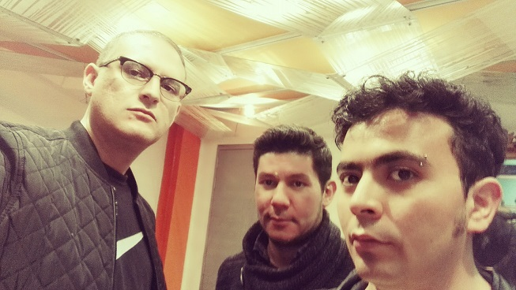
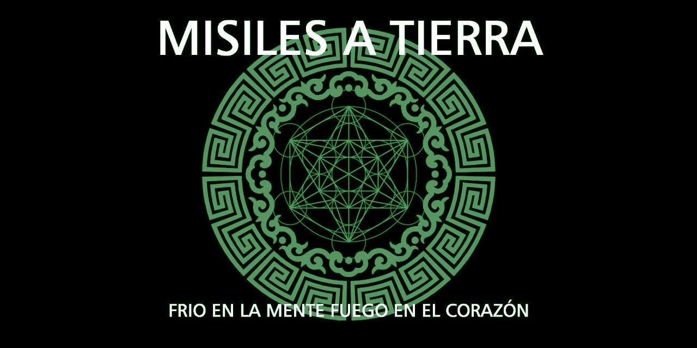

La historia
Biografía
Este proyecto nace con tres amigos del colegio: desde las múltiples bandas por las que pasaron, hasta su separación y el reencuentro más de 15 años después para retomar aquella vieja pasión por el rock.
Todo, ayudado por la magnífica creatividad de composición de Vladimir Carvajal, quien escribió todas las canciones y propuso el nombre de la banda: una alegoría insana sobre la ambigüedad de lo que queremos ser y no somos — humanos vivos, con emociones fuertes por encima de la razón y del pensamiento lógico.

Geometría sagrada
Misiles a Tierra basa sus portadas y logos en la geometría sagrada: el conjunto de formas geométricas presentes en el diseño de sitios considerados sagrados — iglesias, catedrales y mezquitas — junto con los significados simbólicos que se les atribuyen.
Por su trasfondo filosófico y su relación con la matemática, la geometría sagrada evoca la misma dualidad que atraviesa la música de la banda: la lógica y la emoción, el frío y el fuego.
